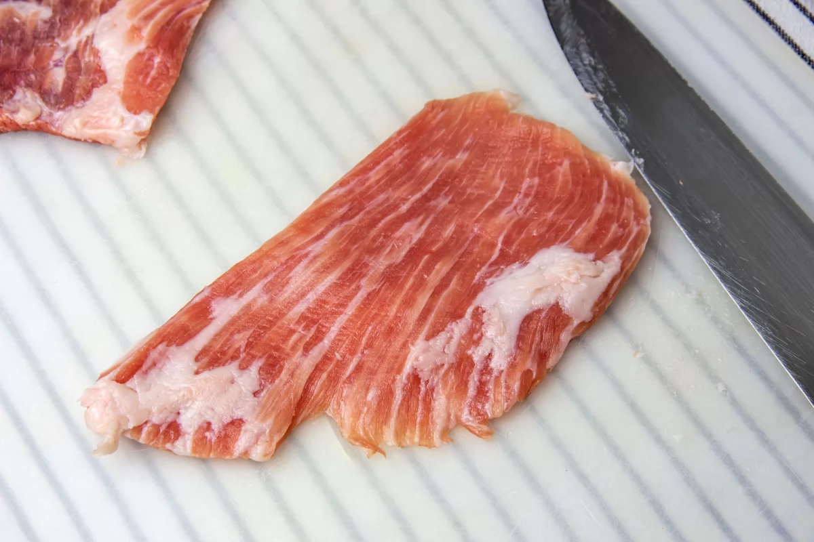
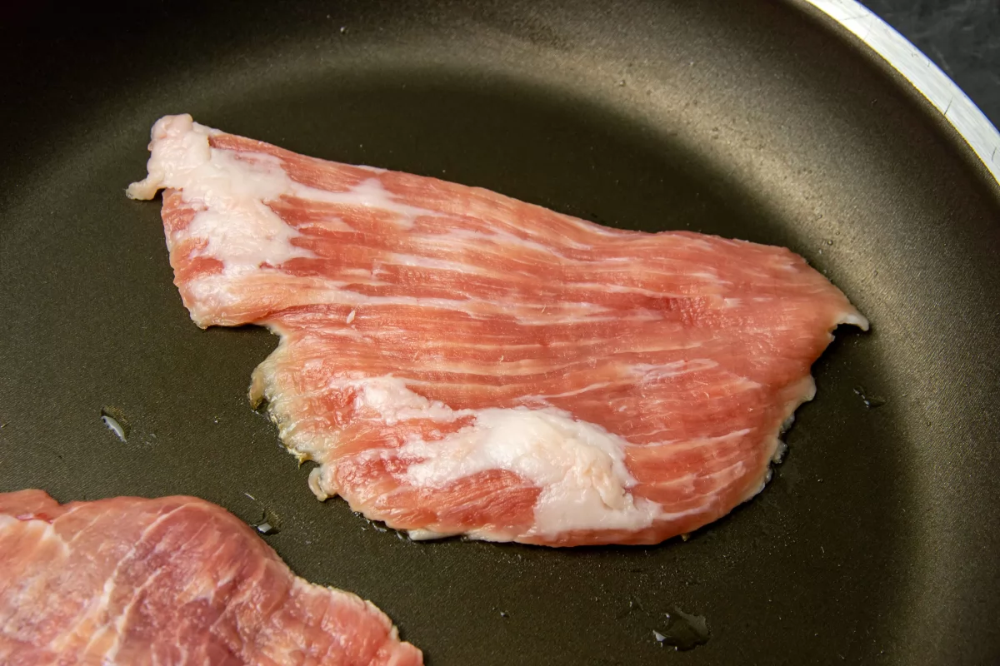
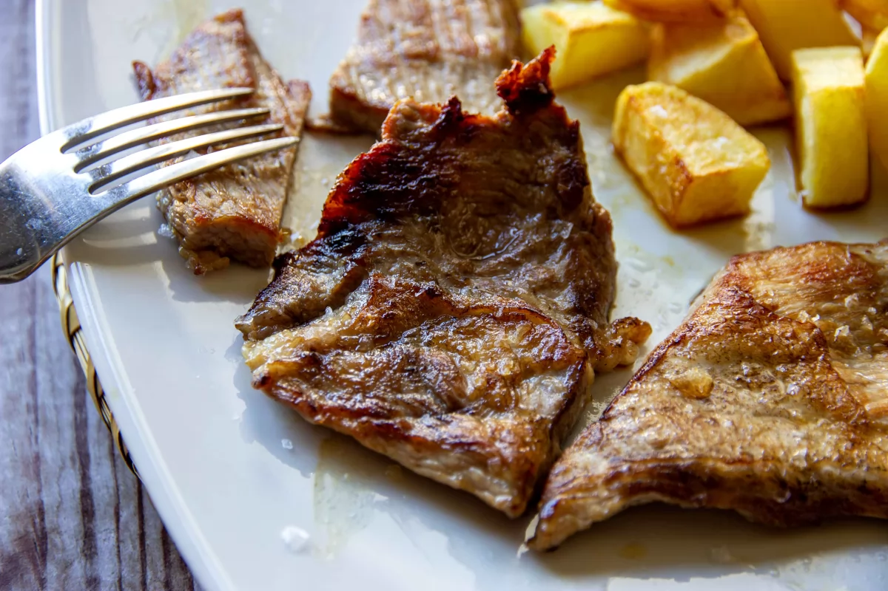
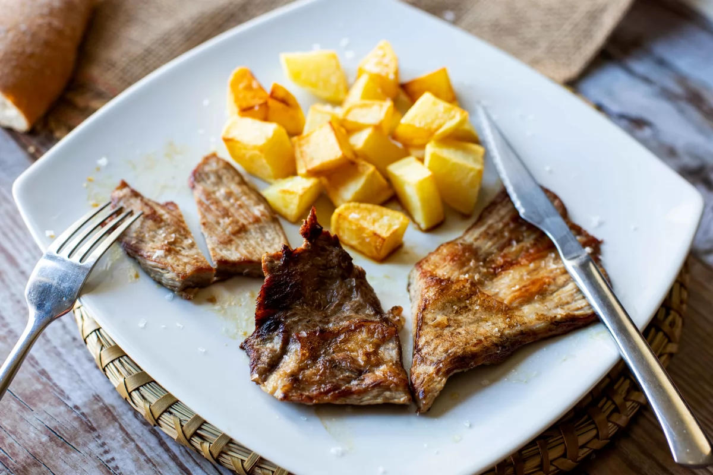

Segundo Plato
Secreto con Patatas
Indice
Ingredientes
- 4 Patatas
- 500 g de secreto de cerdo ibérico
- Sal marina en escamas
Paso a paso
- Lo más importante cuando tenemos una pieza tan exquisita es tratarla con el respeto y cariño que se merece. Es una de las carnes más apreciadas en cocina y, como tal, hay que respetarla al máximo. Nada de salsas (si es posible) y nada de aceite para hacerla, ya que se cocina y se hace a la plancha en su propia grasa y es eso lo que le da ese toque tan especial y ese sabor único, ese sabor irresistible. A mí personalmente es una de las carnes que más me gusta. Las piezas de secreto suelen venir enteras, aunque podemos hacer filetes más pequeños. Para cortar esta carne siempre debemos hacerlo en el sentido de la veta. Tampoco debemos hacer filetes muy pequeños porque si no corremos el riesgo de que nos quede seca.

- Para hacer el secreto de cerdo ibérico a la plancha ponemos al fuego una sartén hasta que esté bien caliente. Podemos cortar un poco del sobrante de grasa del secreto y pasarlo por toda la sartén. Cuando la sartén empiece a humear será el momento en el que pondremos el secreto de cerdo ibérico en ella.

- Bajamos el fuego a la mitad y controlamos que la carne se cocine. Cuando esté dorada por la parte que colocamos sobre la sartén le damos la vuelta y dejamos que se dore por la otra parte. No le echamos nunca la sal mientras la cocinamos, lo que queremos es que los jugos queden en su interior y así que la carne permanezca jugosa en el momento de comerla.

- Cuando la carne se ha dorado y está hecha la sacamos y la servimos en el acto junto con unas patatas fritas o una ensalada, eso queda a gusto de cada uno. Justo cuando vayamos a comerla le ponemos la sal marina en escamas. Le dará el punto justo de sal que necesita y potenciará más si cabe el sabor.

Resultado final